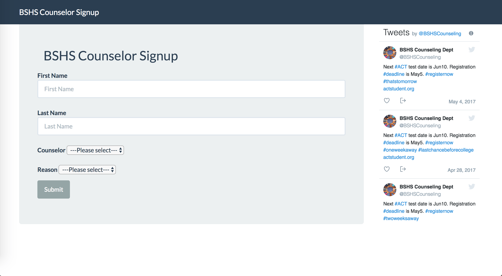

AgendaBook
AgendaBook is a creative approach to school organization, replacing traditional planners with mobile homework tracking. It won the Dave Sigler Technical Award in 2015 and has over 10,000 downloads.
PhonesDown
Phones Down is an app designed to help keep students off of their phone at inappropriate times in the classroom.
CLASP Learning
Connected Learning And Student Progress, CLASP Learning LLC, is a startup whose mission is to create simple software for schools.

Counseling Office Software
Commissioned by the counseling office at Bryan Station, this software serves as a replacement for non-confidential clipboard signups.
Awesome Vote
AwesomeVote is a web service to live poll an audience. It is accompianed by a mobile app. This project is based on MeanJS (Mongo, Express, Angular, NodeJS).
Verifiable
Verifiable is a Wolfram based neural net application that verifies whether a news website or a news article is real or fake through an easy to use interface such as Alexa and a Google plugin.

Steam Yellow
A command line utility to turn a user's name yellow in the Steam game client. It was an exploit that set the flag to a leftover state from a holiday in 2013. The tool gained popularity and had over a hundred thousand downloads within 24 hours. Valve Corporation patched the issue two days later.
EJ Hayes App
This is the very first mobile app I created while in the 8th grade. It was an informational app for my middle school I attended at the time.